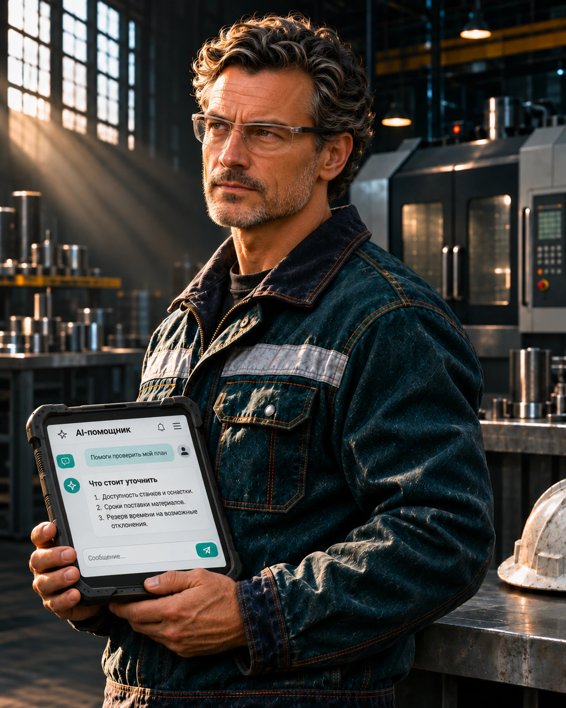
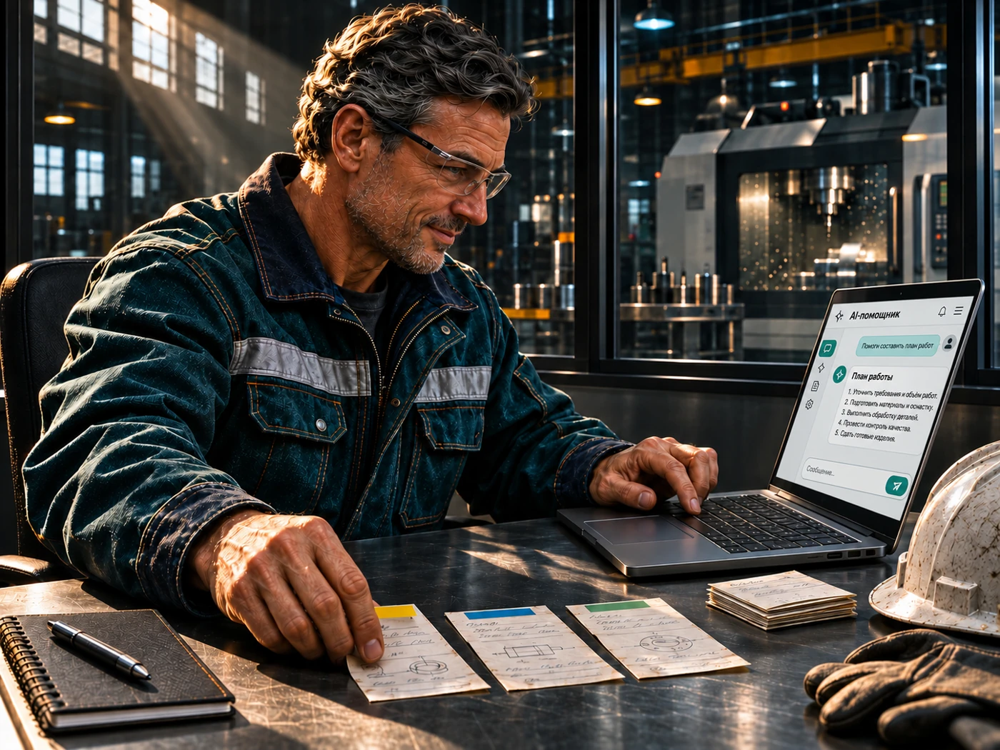
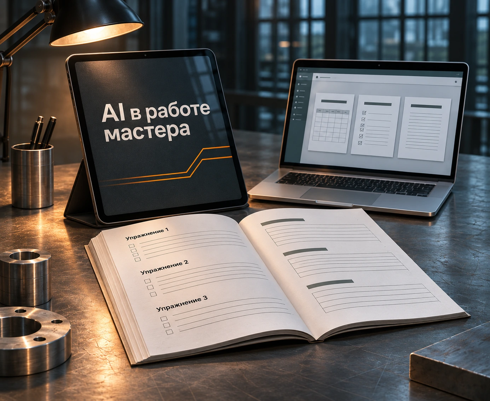

Консультант
Исследует ситуацию, предлагает варианты.
Корпоративный тренинг для производственных предприятий
Видеть отклонения. Проверять расчёты. Обосновывать решения.Учим мастеров применять искусственный интеллект в повседневной работе участка.
Запросить программу и условия
Исследует ситуацию, предлагает варианты.

Выстраивает идеи и заметки в планы и таблицы.
Указывает на проблемные стороны решений.
Три роли нейропомощника помогают мастеру выбрать, что делать на участке, и обосновать каждый шаг фактами.
Мастер задаёт нейросети роль, описывает ситуацию и формулирует запрос. С её помощью сравнивает варианты и выбирает, с чего начать.
Группировка записей, сверка итогов с журналом, подготовка вопросов для выяснения их причин.
Инструкции, отчёты и служебные записки — от исходных данных до рабочего варианта.
Формулировка и редактирование поручений, определение полномочий и точек контроля, подготовка повестки планёрки.
Оформление предложений по улучшению, контроль результата.
Проверка плана, факта и причин отклонений помогает определить, где требуется вмешательство и какие данные нужно уточнить.
Инструкция связана с исходными данными. В предложении по улучшению — обоснование меры и способ проверить результат.
Рабочий понимает ожидаемый результат, границы своих полномочий и момент, когда нужно обратиться к мастеру.
Руководители учатся готовить данные к загрузке, проверять ответы AI и обосновывать свои решения.
На финальной защите проекта тренер оценивает работу каждого участника. Заказчик получает краткую обратную связь по группе и рекомендации по дальнейшему развитию сотрудников.
Учитывать задачу, ограничения и нужный формат ответа.
Сверять расчёты и отделять подтверждённые выводы от предположений.
Сменные задания, инструкции, отчёты и служебные документы.
Определять, как проверить результат улучшения.
Готовить планёрки и рабочие разговоры.
Объяснять, что проверили в ответе AI и почему выбрали конкретное действие.
Тренер передаёт учебный кейс для загрузки в нейросеть. Участники готовят решение и обсуждают результаты.
Постановка задачи, ограничения и проверка ответа.
Индивидуальная и командная работа с учебными данными.
Сверка расчётов и оценка действий, выполнимых на участке.
Исходные ситуации — типовые задачи, отработанные в учебно-методическом комплексе. Их актуальность и потенциальная ценность для конкретного предприятия подтверждаются в процессе согласования программы.

Все упражнения и промпты, используемые на тренинге.
Подробное описание всех заданий и порядка обучения.
Заготовки, которые можно адаптировать и использовать на занятиях и в повседневной работе.
Используем игры для закрепления изученного материала
В командах мастера решают игровые задачи, проверяют свои идеи с помощью AI и представляют результат группе.
За 60 минут фабрика должна выпустить 60 самолётиков. При текущем порядке работы она не успевает.
Каждый участник самостоятельно готовит проект и защищает своё решение на итоговом занятии.
Участник согласует с тренером одну задачу и самостоятельно готовит решение.
Участник показывает результат, запрос к AI и материалы проверки, отвечает на вопросы тренера.
Тренер оценивает самостоятельную работу участника.
Аттестацию участников, успешно защитивших работу, краткую обратную связь по группе и рекомендации по дальнейшему развитию сотрудников.
Защита проекта входит в программу. Проект участники готовят самостоятельно вне аудиторных часов.
Очное проведение — по согласованию, после адаптации сценария и при наличии компьютерного класса.
Для 16–20 участников согласуем регламент защит. Свыше 20 человек — несколько групп.
Компьютер с интернетом, доступ к площадке и групповому чату, личная учётная запись в Алисе или GigaChat. Для очного формата — компьютерный класс с выходом в интернет каждого компьютера.
Назначает координатора, формирует группу и выделяет время на занятия, самостоятельную работу и защиту. С координатором согласуем расписание.
Рассчитывается индивидуально с учётом задач, численности, формата, сроков и возможной адаптации очного сценария.
Оставьте контактные данные. Мы направим программу и свяжемся с вами, чтобы обсудить задачи предприятия, состав группы и удобные сроки.
Предпросмотр формы. Отправка заявок пока не подключена.
Запрос получен. Направим программу на указанную почту и свяжемся с вами для обсуждения условий.
Не удалось отправить запрос. Попробуйте ещё раз.
Проверьте адрес электронной почты.